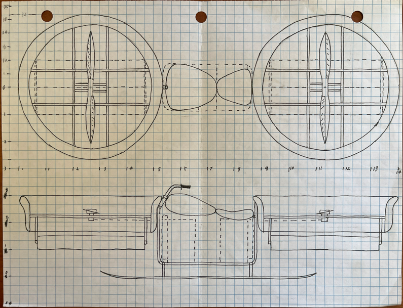
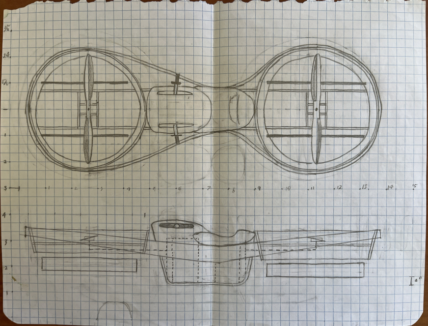

Concept Design
Hoverbike Concept
This is a personal design project I started back in high school. I was really into what Malloy Aeronautics was doing at the time, and it made me want to try designing my own version of a hoverbike.
Project Overview
The main idea was to see if I could package a small personal flying vehicle into something that felt more like a motorcycle than an aircraft. The design has changed a lot over the years as I worked through the frame, propulsion layout, rider position, and just trying to make everything fit together in a way that made sense.
Early Design
The early versions were mostly me figuring out the basic shape and where everything could go. A lot of it was trial and error, moving parts around, changing proportions, and seeing what looked like it could actually work.


Design Development
As the design got more serious, I started paying a lot more attention to how everything would actually fit and work together. I worked through the frame layout, component placement, center of gravity, balancing the design, and even adding fins for stability. I have also sourced a 50 hp engine that I plan to base the next version around.
Key Design Areas
- Overall frame and chassis layout
- Propulsion system placement
- Rider position and packaging
- Mechanical component layout
- CAD modeling and design revisions
- Structural and fabrication considerations
Current Status
The design is still evolving. I continue to revise the layout and proportions as I work through different ideas and improve the overall concept.